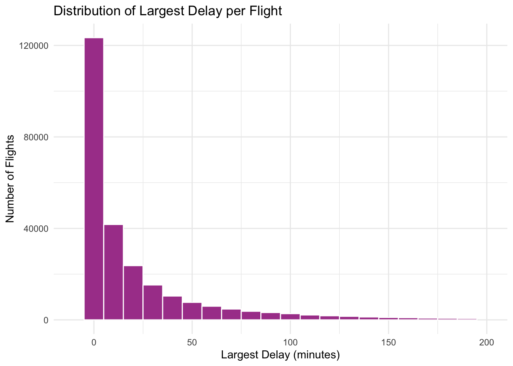
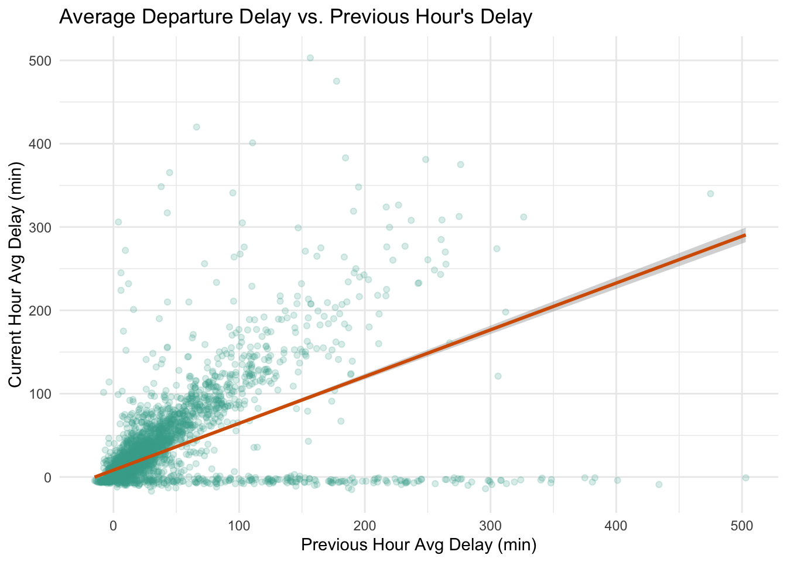

HW04-P1 Data wrangling
Instructions
Requirements:
Use tidyverse functions to do the following:
- Ex. 1 Calculate departure hour based on
dep_timeand calculate the most common hour. - Ex. 2 Calculate the largest delay and then make an appropriate plot to show distribution.
- Ex. 3 Calculate average delay and proportion of missing values for each origin using the correct delay variable. Then calculate and show which origin airport had longest delay and most missing values.
- Ex. 4 Calculate IQR and then calculate/show which desintation airport had largest variability.
- Ex. 5 Calculate average dep delay per hour and show plot of relationship with previous hour.
- Ex. 6 Ensure data quality by re-calculating departure delay and show which rows, if any, are not consistent.
- Ex. 7 Calculate the fraction of flights that have any delay by weekday and show which day has the fewest delayed flights, proportionally.
- Ex. 8 Make an appropriate, professional plot.
- Ex. 9 Make an appropriate, professional plot.
Flights
Install the nycflights13 package for the data used in this exercise. You can look at the codebook for the flights dataset with ?flights. Each case represents one flight from a NYC airport in 2013.
Using the flights dataset, complete the following:
-
What is the most common departure hour? Use the
dep_timevariable. -
Make a plot of the distribution of the largest delay for each flight (the larger of
dep_delayandarr_delay).Code
flights |> mutate(max_delay = pmax(dep_delay, arr_delay, na.rm = TRUE)) |> ggplot(aes(x = max_delay)) + geom_histogram(binwidth = 10, fill = "#AA4499", color = "white") + scale_x_continuous(limits = c(-10, 200)) + labs( title = "Distribution of Largest Delay per Flight", x = "Largest Delay (minutes)", y = "Number of Flights" ) + theme_minimal()
-
Which
originairport had the longest average delay? Should you usedep_delayorarr_delayhere? Which had the largest proportion of missing values for this delay variable?Code
# A tibble: 3 × 3 origin avg_arr_delay prop_missing <chr> <dbl> <dbl> 1 EWR 9.11 0.0307 2 LGA 5.78 0.0337 3 JFK 5.55 0.0198I decided to use
arr_delaybecause it shows the actual impact on passengers better. A flight is able to make up time in the air, so the departure delay might not always be the most meaningful. And, the output shows us that EWR had the longest average arrival delay. -
Which destination (
dest) airport had the largest variability in delays in terms of the difference between the 25th and 75th percentiles? Should you usedep_delayorarr_delayhere?Code
# A tibble: 1 × 2 dest iqr_arr_delay <chr> <dbl> 1 TUL 70I used
arr_delaysince we are looking at the variability at the destination airport, so arrival delay is likely a more relevant measure here -
Delays are typically temporally correlated: even once the problem that caused the initial delay has been resolved, later flights are delayed to allow earlier flights to leave. Use
lag()to explore how the average departure delay for an hour is related to the average departure delay for the previous hour.Code
hourly_delays <- flights |> mutate(dep_hour = dep_time %/% 100) |> group_by(year, month, day, dep_hour) |> summarise(avg_dep_delay = mean(dep_delay, na.rm = TRUE), .groups = "drop") |> arrange(year, month, day, dep_hour) |> mutate(prev_hour_delay = lag(avg_dep_delay)) hourly_delays |> ggplot(aes(x = prev_hour_delay, y = avg_dep_delay)) + geom_point(alpha = 0.2, color = "#44AA99") + geom_smooth(method = "lm", color = "#D55E00") + labs( title = "Average Departure Delay vs. Previous Hour's Delay", x = "Previous Hour Avg Delay (min)", y = "Current Hour Avg Delay (min)" ) + theme_minimal()
-
Compare
dep_time,sched_dep_time, anddep_delay. Check the data quality of these three variables. Are they internally consistent with each other? If not, how are they not consistent?Code
flights |> mutate( dep_time_min = (dep_time %/% 100) * 60 + (dep_time %% 100), sched_dep_min = (sched_dep_time %/% 100) * 60 + (sched_dep_time %% 100), recalc_delay = dep_time_min - sched_dep_min, recalc_delay = if_else(recalc_delay < -300, recalc_delay + 1440, recalc_delay), consistent = near(recalc_delay, dep_delay) ) |> filter(!consistent, !is.na(dep_time), !is.na(dep_delay)) |> select(year, month, day, dep_time, sched_dep_time, dep_delay, recalc_delay)# A tibble: 1 × 7 year month day dep_time sched_dep_time dep_delay recalc_delay <int> <int> <int> <int> <int> <dbl> <dbl> 1 2013 1 9 641 900 1301 -139The three variables are internally consistent with each other as there is no output indication of any inconsistent rows.
-
On what day of the week are delays least likely?
Code
# A tibble: 7 × 2 weekday prop_delayed <ord> <dbl> 1 Sat 0.348 2 Tue 0.364 3 Wed 0.373 4 Sun 0.383 5 Mon 0.401 6 Fri 0.425 7 Thu 0.432Saturday is the day when delays are least likely, so it is the best day to book your flight for and be in the air if you want to avoid those delays.
Resources Reflection (required)
List the resources you used to help with this assignment then write 3-5 sentence reflection on which resources were most helpful in finishing this task.
Resources:
R documentation
In class activities
Textbook
Reflection: The most helpful resource was the R documentation since it provides very useful explanations of what the functions are and what they do. In particular, I’ve been referencing documentation to find colorblind-friendly color palettes to use in my visualizations. The in class activities are also useful to look back at and the textbook is always a nice source of information to review.